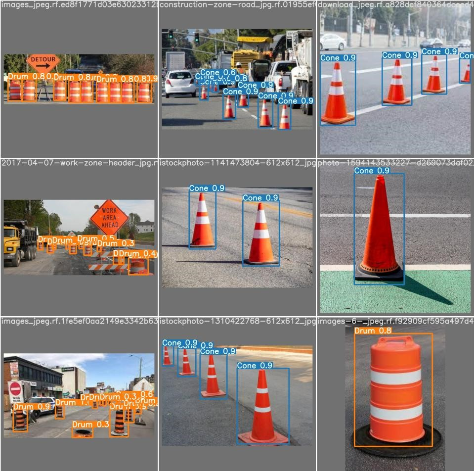
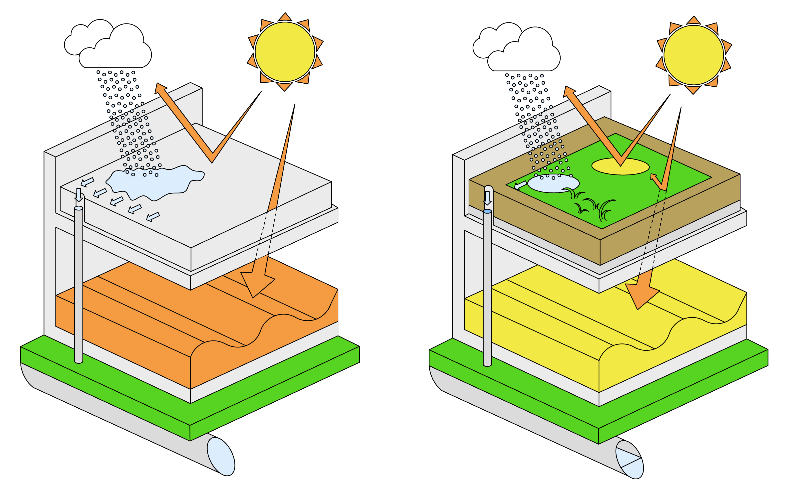

Engineering Capstone Project - Autonomous Vehicle Initiative: Obstacle Detection System
Summary: Develop a vision system to identify obstacles on and around the road
- Use of artificial intelligence for object detection
- Integration on professional grade hardware
- Optimization of safety and performance for a real time requirements
- Use of Agile project management and work cycle
- Formal reports and presentations judged by a panel of impartial engineering professors
Simplified Monopoly
Summary: Recreate a simplified version of monopoly using design patterns in Java
- Use and adapt design patterns to create a robust, object-oriented program
- Collaborate with other programmers using various tools
- Use of test-driven development to verify intended function

E-Commerce Application in Java
Summary: Develop a program to maintain an online store
- Use of object-oriented programming to develop classes that model clients and their carts, store inventory and a store manager
- Use of Swing Development Toolkit to display a graphical user interface
- Use of test-driven development to improve quality of code

Green Roofs: Report of Findings
Summary: Research and present the scientific theories behind the environemntal benefits of green roofs
- Scientific research on the environmental benefits of green roofs
- Final report of findings in IEEE format
- Presentation of findings for the Deep Blue Cleanup organization